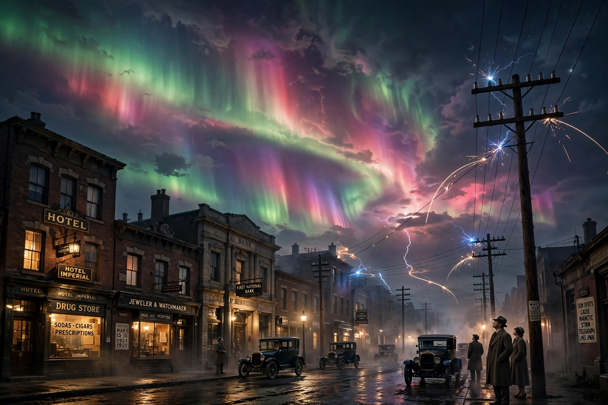

The May 1921 geomagnetic storm, also known as the New York Railroad Storm, was a major geomagnetic storm of 13–15 May 1921, among the most intense of the 20th century, caused by a series of coronal mass ejections.

| May 1921 geomagnetic storm | |
|---|---|
| Dates | 13–15 May 1921 |
| Type | Geomagnetic storm |
| Effects | Telegraph and railway signalling failures, fires |
Aurorae were seen worldwide, including near the equator. Geomagnetically induced currents disrupted telegraph services, caused a fire at the Central New England Railroad station, and damaged the New York Central Railroad's signal and switching systems — hence its nickname.
Studies estimate its Dst index may have rivalled or exceeded the 1859 Carrington Event, illustrating the vulnerability of modern infrastructure to extreme space weather.